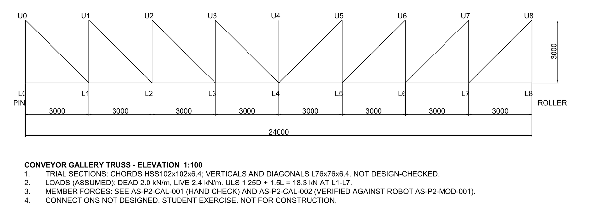
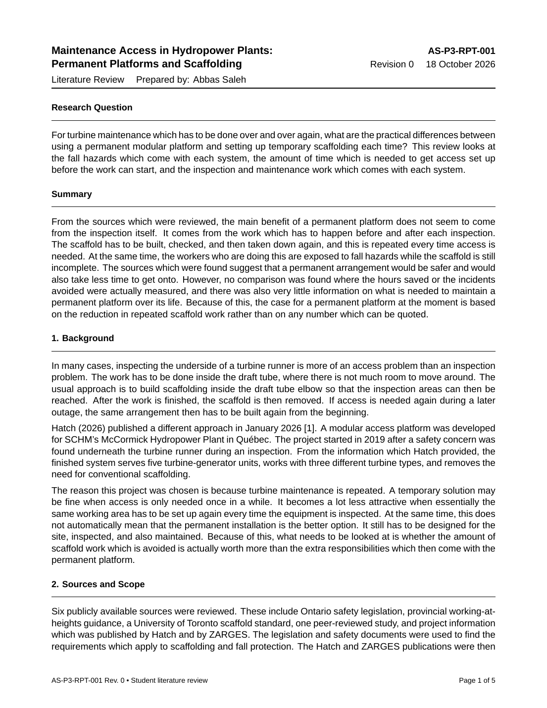

Analysis
Structural Verification
Hand calcs checked against Robot and Excel
Civil Engineering Student — Toronto Metropolitan University
Structural verification · Steel framing · Hand calculation checked against software
I'm a second-year Civil Engineering student at Toronto Metropolitan University (BEng, expected 2029), focused on structural engineering. I've worked on site with a design-build firm, tying rebar, building formwork and placing concrete, and as a project coordinator on a 182-unit mixed-use development, working between the structural, civil, geotechnical, planning and landscape consultants.
Outside class I build verification packages: I check a structure by hand, in a spreadsheet and in analysis software, chase down every difference between them, and issue drawings and models under revision control. My first package was reviewed by a practising P.Eng. Tools: Robot Structural Analysis, Mathcad Prime, Excel, AutoCAD and Revit (Autodesk Certified User).
Analysis
Hand calcs checked against Robot and Excel

Drafting
AutoCAD drawings, Revit models and schedules
Field
Reinforced concrete construction and project coordination
Self-directed project · October 2026 · Reviewed by S. Al-Zubaidi, P.Eng.
R1 reviewed by S. Al-Zubaidi, P.Eng. (comments 2026-10-21) · R2 in progress
A 6.0 m × 3.0 m steel maintenance platform (W310 beams, W150 joists, HSS posts, L-angle X-bracing), checked for gravity loads by three independent methods: hand calculation in Mathcad, a parametric Excel workbook and a 3D Robot model. Drawn in AutoCAD and modelled in Revit, with a material take-off and a review register. Revision R1, reviewed by S. Al-Zubaidi, P.Eng., models the bracing as tension-only, adds notional and guard lateral loads checked by hand, and checks every member to CSA S16. Student exercise, not for construction.
| Quantity | Unit | Mathcad | Excel | Robot | Robot vs hand | Limit |
|---|---|---|---|---|---|---|
| J1 factored moment, Mf | kN·m | 13.51 | 13.52 | 13.51 | 0.0% | – |
| J1 factored shear, Vf | kN | 18.02 | 18.02 | 18.02 | 0.0% | – |
| J1 service deflection | mm | 3.56 | 3.56 | 3.56 | 0.0% | 8.33 |
| B1 factored moment, Mf | kN·m | 78.70 | 78.70 | 78.69 | 0.0% | – |
| B1 factored shear, Vf | kN | 35.96 | 35.96 | 35.95 | 0.0% | – |
| B1 service deflection | mm | 10.72 | 10.72 | 10.72 | 0.0% | 16.67 |
| C1 factored axial load | kN | 46.03 | 46.03 | 46.83 | +1.7% | – |
| C1 Euler buckling load, Pcr | kN | 1,546 | 1,546 | Not run | – | – |
C1: the Robot reaction (46.83 kN) includes the bracing self-weight. With tension-only braces in R1, all braces are inactive under gravity and the Robot post member force is 46.55 kN, within 1.1% of the 46.03 kN hand value. Comparison criterion: 2%.
| Item | Case | Hand | Robot | Diff. |
|---|---|---|---|---|
| Brace tension, bars 22/24 (bottom/top) | ULS+GY | 5.44 / 5.66 kN | 5.43 / 5.66 kN | 0.2% / 0.0% |
| C1 axial force | ULS+GY | 50.40 kN | 50.40 kN | 0.0% |
| Brace tension, bars 18/20 (bottom/top) | ULS+GX | 2.41 / 2.63 kN | 2.41 / 2.63 kN | 0.0% |
| C1 axial force | ULS+GX | 47.63 kN | 47.63 kN | 0.0% |
| Drift at post top | SLS+GY | 0.29 mm | 0.30 mm | −3% |
| B1 lateral deflection at midspan | SLS+GY | 4.67 mm | 4.65 mm | +0.4% |
ULS+GY = 1.25D + 1.5L + 1.5GY + 1.0NY governs the post and brace design. Drift differences of a few hundredths of a millimetre come from rounding and minor flexibility not included by hand.
| Member | Check | S16 clause | Factored effect | Factored resistance | Util. |
|---|---|---|---|---|---|
| B1 | Bending, Class 2, Lu = 1.5 m | 13.6 | Mf = 78.70 kN·m | Mr = 192.2 kN·m | 0.41 |
| B1 | Shear | 13.4.1.1 | Vf = 35.96 kN | Vr = 373.8 kN | 0.10 |
| B1 | Biaxial bending, ULS+GY | 13.8.3 | Mfx = 78.70, Mfy ≤ 5.06 kN·m | Mrx = 192.2, Mry = 42.5 kN·m | 0.53 |
| J1 | Bending, Class 4 flange, Lu = 3.0 m | 13.5(c), 13.6 | Mf = 13.51 kN·m | Mr = 44.3 kN·m | 0.30 |
| J1 | Shear | 13.4.1.1 | Vf = 18.02 kN | Vr = 183.3 kN | 0.10 |
| C1 | Compression, KL = 3.0 m, KL/r = 61.5 | 13.3.1 | Cf = 50.40 kN | Cr = 661 kN | 0.08 |
| BR1 | Tension, gross section yield | 13.2 | Tf = 5.66 kN | Tr = 241.9 kN | 0.02 |
| BR1 | Net section, shear lag 0.60An | 12.3.3.3, 13.2 | Tf = 5.66 kN | Tr = 124.7 kN | 0.05 |
| BR1 bolt | Shear, threads intercepted | 13.12.1.2 | Vf = 5.66 kN | Vr = 87.1 kN | 0.07 |
| BR1 bolt | Bearing on 6.35 mm leg | 13.12.1.2 | Bf = 5.66 kN | Br = 137 kN | 0.04 |
All members pass; the highest utilization is 0.53 in B1 under ULS+GY. The B1 result relies on the joists restraining its compression flange at 1.5 m (unbraced over 6.0 m, utilization 1.01); this is open and to be confirmed in the connection design. The weak-axis moment in B1 is an upper bound (guard load carried by B1 alone).
Self-directed project · October 2026
Rev 0 · first issue

Member-force verification of a 24 m, statically determinate Pratt truss for a conveyor gallery, with 8 panels at 3 m, 3 m deep, and pin and roller supports. Loads were worked out by hand to give reactions of 73.2 kN. Seven members were then solved by method of joints (L0, U0, L1) and a section cut through panel 4. The results were compared against a Robot Structural Analysis model after converting Robot's sign convention (+ = compression). SLS deflection was checked, the elevation was drawn in AutoCAD (S-301) and a material take-off was prepared.
| Member | Method | Hand (kN) | Robot (kN) | Difference | T / C |
|---|---|---|---|---|---|
| L0–L1 | Joint L0 | 0.00 | 0.00 | 0.0% | Zero force |
| U0–L0 | Joint L0 | 64.05 | 64.05 | 0.0% | C |
| U0–L1 | Joint U0 | 90.58 | 90.58 | 0.0% | T |
| U0–U1 | Joint U0 | 64.05 | 64.05 | 0.0% | C |
| U1–L1 | Joint L1 | 45.75 | 45.75 | 0.0% | C |
| L1–L2 | Joint L1 | 64.05 | 64.05 | 0.0% | T |
| U3–U4 | Section cut, panel 4 | 146.40 | 146.40 | 0.0% | C |
Reactions: 73.20 kN each by hand and in Robot (sum 146.40 kN). The other 26 members are taken from Robot and checked by symmetry and equilibrium at joint U4; they were not solved individually by hand.
Self-directed literature review · October 2026
Rev 0 · AS-P3-RPT-001

For turbine maintenance which has to be done over and over again, what are the practical differences between using a permanent modular platform and setting up temporary scaffolding each time? This review looks at the fall hazards which come with each system, the amount of time which is needed to get access set up before the work can start, and the inspection and maintenance work which comes with each system.
From the sources which were reviewed, the main benefit of a permanent platform does not seem to come from the inspection itself. It comes from the work which has to happen before and after each inspection. The scaffold has to be built, checked, and then taken down again, and this is repeated every time access is needed. At the same time, the workers who are doing this are exposed to fall hazards while the scaffold is still incomplete. The sources which were found suggest that a permanent arrangement would be safer and would also take less time to get onto. However, no comparison was found where the hours saved or the incidents avoided were actually measured, and there was also very little information on what is needed to maintain a permanent platform over its life. Because of this, the case for a permanent platform at the moment is based on the reduction in repeated scaffold work rather than on any number which can be quoted.
| Reference | Relevant information | What remains unclear |
|---|---|---|
| Hatch [1] | Describes the McCormick platform and the problems which come with repeated scaffolding | Labour hours, incident data and maintenance requirements |
| Ontario guidance [2] | Explains mandatory working-at-heights training | Does not compare access systems |
| O. Reg. 213/91 [3] | Gives the requirements which apply to fall protection, guardrails and scaffolding | Does not say anything about replacing scaffolding with a permanent platform |
| UofT EHS [4] | Gives scaffold erection and inspection guidance | Does not address permanent turbine platforms |
| Robson et al. [5] | Reports changes in fall-related injury claims after the Ontario training requirement | Does not measure the effect of permanent platforms |
| ZARGES [6] | Describes quick setup of portable access equipment at a hydropower station | Not directly comparable to McCormick's permanent system |
Construction and engineering roles in the GTA, newest first.
Bay & York Development Group
Zee Design & Build Inc.
Toronto Metropolitan University · Expected April 2029
Relevant coursework
Seeking a structural engineering co-op, May 2027.